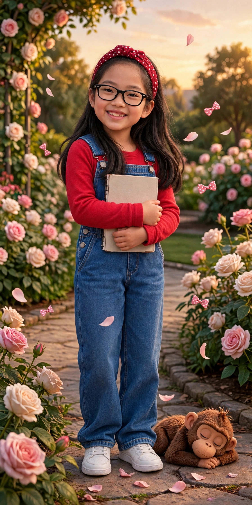

Opened from her notebook
MIKA’S
WORLD
Draw it. Craft it. Write it. Cook it — no oven needed. Sing it.
Her notebook, as a place. Every door below is somewhere she actually goes: the studio, the kitchen, the stage, the shelf.
Play Mika’s Music
Her Top 3, piano versions — the kind you can draw to.
Watch it on YouTube instead →
The doors
Nine places. All hers.
Each door opens one place, and each place is one thing done properly. Start anywhere — the way back is always at the top.

That’s Mika’s World — for now.
Built from her notebook list. The shelf is only getting bigger, the recipe box only fuller, and the next book is already arguing with her about its ending.
come back soon — m.